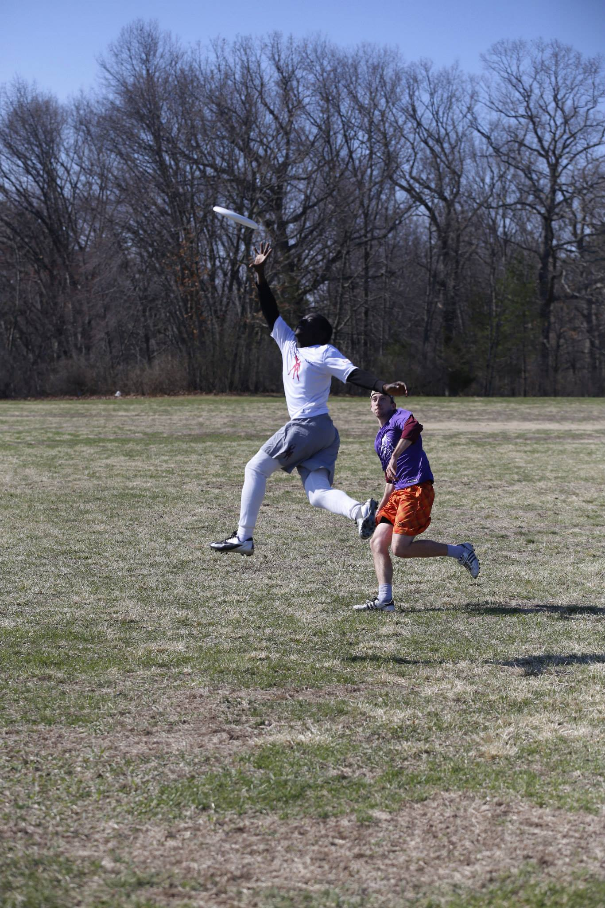
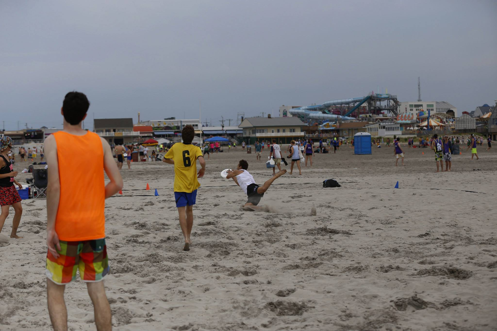
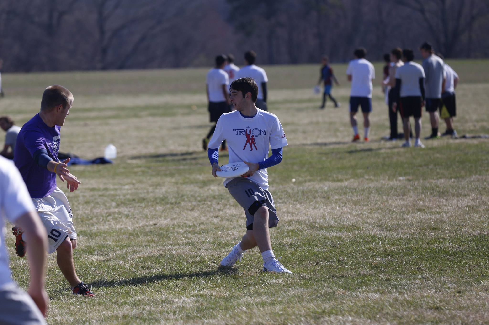
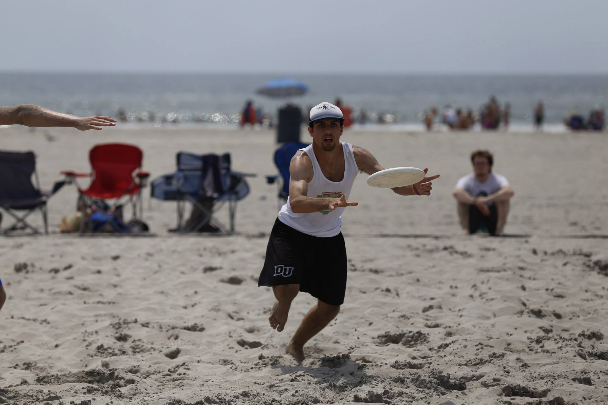

Sports happen fast so one of the most important things to remember about sports photography is to use a fast shutter speed. The faster the shutter opens and closes, the more likely you are to get the perfect moment. Positioning is also really important for sports photography so understanding where action happens on the field or court is important. For basketball, you might want to hang out on the baseline near the corner to get good angles of shots or dunks. For football or soccer, you may want to stand on the sideline near the endzone or goal to get the best angles for goals or touchdowns.
My experience with sports photography is primarily around ultimate frisbee, which I played in college. I would bring my camera to tournaments and take pictures of my friends in my downtime. The pictures below are from different tournaments over my time at Brandeis University.
   